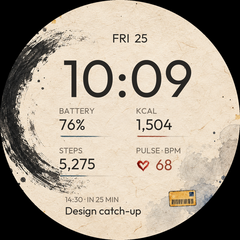

Five editable complications.
Original painted artwork with digital time, Fitbit data and an editable card shortcut. Layout preview with sample values; live rendering is checked on Wear OS.

Five editable complications.
Edit tools/generate_face.py, run python tools/generate_face.py and python tools/render_preview.py, then refresh this page. No server needed.